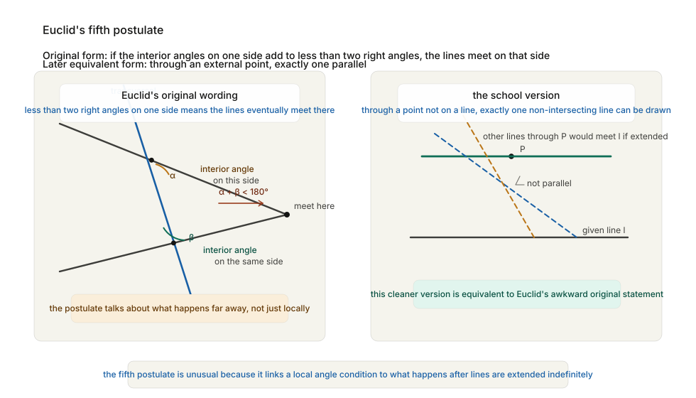
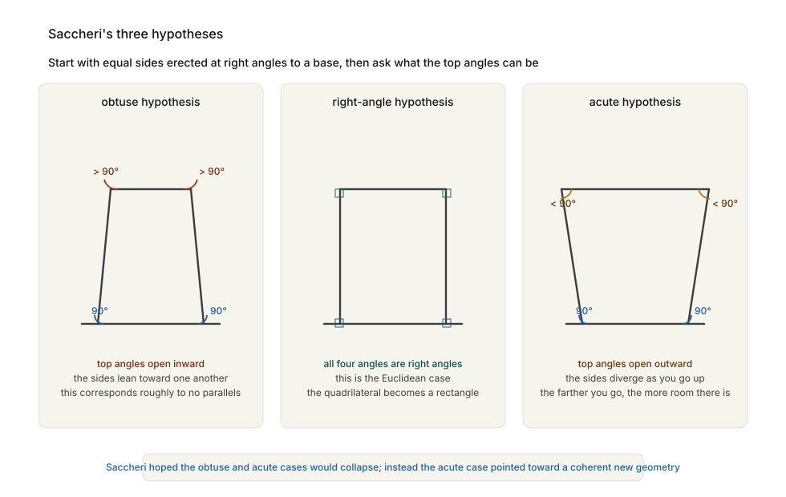
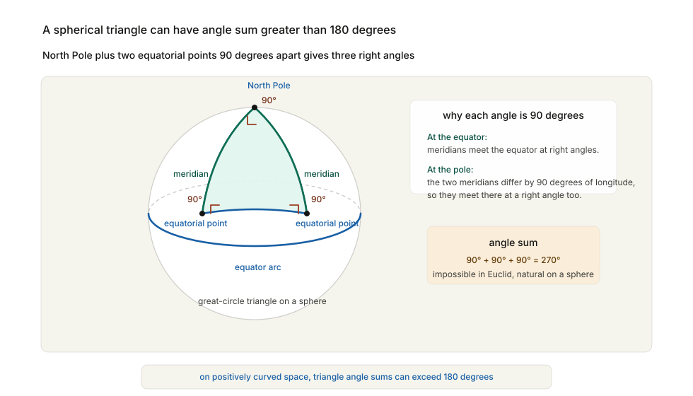

For nearly two thousand years, geometry looked finished.
Not complete in the sense that no one could add to it. Greek mathematics itself had continued after Euclid, and later mathematicians in the Islamic world, India, and Europe all extended the subject in important ways. But finished in a deeper sense: settled, foundational, unquestionable. If arithmetic was the mathematics of number and calculus the mathematics of change, Euclidean geometry seemed to be the mathematics of space itself. Not one possible description of space. The description.
That conviction rested on a book written in Alexandria around 300 BCE.
Euclid’s Elements is one of the most successful books in human history. It begins with definitions, common notions, and postulates, and then builds proposition after proposition by strict logical deduction. For generations of readers it was the model not only of mathematics but of reasoning itself: a demonstration that human thought, if properly ordered, could proceed from a few clear principles to a vast and reliable structure.
And yet there was a flaw in the foundation, or at least something that felt like one. One of Euclid’s assumptions looked different from the others. It looked less obvious, less elementary, less like a self-evident truth and more like a disguised theorem smuggled in at the start. For two thousand years, mathematicians tried to repair that flaw. In the nineteenth century, they discovered something much stranger. The flaw was not in Euclid’s reasoning. The flaw was in the belief that Euclid’s geometry was the only geometry possible.
Euclid’s first four postulates are simple enough to feel almost unavoidable.
You may draw a straight line from any point to any other.
You may extend a finite straight line continuously.
You may draw a circle with any centre and radius.
All right angles are equal.
These are not modern axioms in the strictest logical sense, but they are clear. They say, in effect: lines can be drawn, extended, and compared; circles can be constructed; right angles behave uniformly. Even if one wants to criticise their precision, one sees immediately what kind of geometry they are meant to support.
The fifth postulate is different. In Euclid’s own form, it says that if a line falling across two other lines makes the interior angles on one side add up to less than two right angles, then the two lines, if extended far enough, will meet on that side.

It is easier to grasp in the later equivalent form that most students now learn: through a point not on a given line, there is exactly one line parallel to the given line. This is the parallel postulate.
The difference in tone matters. The first four postulates feel constructive. Do this. Draw that. Extend this line. The fifth feels global. It talks about what happens arbitrarily far away. It is not about a local construction you can perform in front of you. It is about the large-scale structure of the whole plane.
Mathematicians noticed this almost immediately. Already in antiquity there were attempts to prove the fifth postulate from the others, as if it were too cumbersome to deserve the dignity of an axiom. Proclus discussed the problem in late antiquity. In the Islamic world, Ibn al-Haytham, Omar Khayyam, and Nasir al-Din al-Tusi all worked on related arguments, trying in different ways to show that Euclid’s awkward final assumption could be derived from simpler principles. Their efforts were ingenious, and they clarified many hidden assumptions in the subject. But they did not eliminate the postulate.
This should have been a warning. When a theorem refuses to be proved for two thousand years, there are at least two possibilities. The first is that no one clever enough has yet appeared. The second is that the theorem is not a theorem at all. For a very long time, mathematicians assumed the first.
At first glance the parallel postulate can seem like a technical nuisance, a fussy detail about lines that do not meet. In fact it reaches into the whole structure of geometry.
In Euclidean geometry, the postulate guarantees a flat world. Triangles have angle sum:
180°The circumference of a circle is exactly proportional to its radius, with constant ratio:
C = 2πrRectangles can exist. Similar triangles of different sizes can exist. If two lines are everywhere the same distance apart, they never meet. All of these facts are connected.
The easiest way to see the connection is with triangles. In the geometry learned at school, if one angle of a triangle is 50° and another is 60°, then the third must be:
180° - 50° - 60° = 70°That feels like a basic fact of the universe. But it is not a basic fact of logic. It depends on the parallel postulate. Euclid’s proof of the angle sum of a triangle works by drawing a line through one vertex parallel to the opposite side and then using properties of alternate interior angles. Without the guarantee that there is exactly one such parallel, the proof breaks.
So the issue was never merely about parallel lines. It was about the large-scale architecture of space. If the fifth postulate could be proved from the others, then Euclidean geometry would remain uniquely necessary. If it could not, then geometry might be more contingent than anyone had imagined.
That possibility was difficult to accept because geometry did not look contingent. Arithmetic might vary in notation. Astronomy might revise its models. But geometry seemed to describe the one space human beings actually inhabit. A mathematics of alternative spaces sounded like a contradiction in terms. The nineteenth century would discover that it was not.
The first major crack in the old certainty came from a man who did not intend to crack anything.
Girolamo Saccheri was an Italian Jesuit priest and mathematician who published a book in 1733 with a wonderfully combative title: Euclid Freed of Every Flaw. His goal was conservative. He wanted to show that the parallel postulate was unnecessary because it could be derived from the other axioms. Euclid, in other words, would be vindicated by needing even less than Euclid himself had thought.
Saccheri’s method was brilliant. He considered a special quadrilateral. Start with a base line AB. Erect two equal segments AD and BC at right angles to the base. Join their upper endpoints D and C. The result is now called a Saccheri quadrilateral:
D------C
| |
| |
A------Bwith:
∠A = ∠B = 90°
AD = BCThe crucial question is: what can be said about the top angles at D and C?
Saccheri observed that, by symmetry, they must be equal. So there are only three possibilities:
He called these the hypothesis of the right angle, the obtuse angle, and the acute angle.
The first corresponds to ordinary Euclidean geometry. Saccheri’s strategy was to show that the other two hypotheses lead to contradictions. If both collapsed, Euclid would stand uniquely vindicated.
He succeeded with the obtuse hypothesis, which corresponds roughly to a geometry in which straight lines bend toward one another so strongly that parallels do not exist. But when he turned to the acute hypothesis, something awkward happened. Instead of contradiction after contradiction, he found a coherent and highly structured alternative world. In that world, the angle sum of a triangle is less than 180°. In that world, lines that begin diverging can diverge faster than Euclid would permit. In that world, the farther you go from a line, the more room there is.

The acute top angles were not yet the new geometry itself. They were the doorway to a chain of consequences that fit together without contradiction.
Saccheri hated these conclusions. They seemed to him repugnant to the nature of the straight line. He eventually declared the acute hypothesis false, but not because he had genuinely derived a contradiction from it. He rejected it because it offended Euclidean intuition. His book is one of the great near-misses in intellectual history: a man sets out to destroy a new geometry and almost discovers it instead.
What Saccheri had really shown was that the fifth postulate could not be treated casually. Remove it, and geometry does not collapse at once into nonsense. It begins to change character.
The cleanest way to understand these new possibilities is through triangles.
In ordinary Euclidean geometry:
angle sum of triangle = 180°That fact is so familiar that it does not feel like information. It feels like the definition of trianglehood itself. But once the fifth postulate loosens, the angle sum becomes a diagnostic.
On a sphere, for example, triangles can have angle sum greater than 180°.
Take the North Pole and two points on the equator separated by ninety degrees of longitude. Connect the pole to each equatorial point by a meridian, and connect the two equatorial points by the equator. You now have a spherical triangle. The angle at each equatorial point is 90°, because meridians meet the equator at right angles. The angle at the North Pole can also be 90° if the longitudes differ by ninety degrees. So the total angle sum is:

90° + 90° + 90° = 270°That is impossible in Euclidean geometry. On a sphere it is perfectly natural.
This does not yet give non-Euclidean geometry in the strict nineteenth-century sense, because the sphere is not a Euclidean plane with one postulate altered. Great circles, which play the role of straight lines on the sphere, are finite and any two of them meet. Still, the sphere teaches the essential lesson: geometry depends on the structure of the space in which it lives.
Something similar happens in the opposite direction in what came to be called hyperbolic geometry. There, triangles have angle sum less than 180°. A triangle might have angles:
50°, 60°, 60°whose total is:
170°Again, impossible in Euclid. Again, internally coherent if the surrounding geometry is different.
The amount by which a triangle misses 180° turns out to measure something real about the space itself. On a sphere, the excess over 180° reflects positive curvature. In hyperbolic geometry, the defect below 180° reflects negative curvature. The triangle stops being merely a local figure. It becomes a probe into the shape of the world.
Once that was understood, Euclidean geometry could no longer be treated as pure inevitability. It became one case among several.
The parallel postulate also has a simpler and more startling way to fail.
In Euclidean geometry, if you have a line l and a point P not on that line, there is exactly one line through P that never meets l.
In spherical geometry, there are no such lines. If “lines” are great circles, then every pair eventually meets.
In hyperbolic geometry, there are infinitely many.
That last possibility is the one that offended Euclidean instinct most severely. Through a single external point, more than one parallel? Indeed, in the hyperbolic case there are infinitely many lines through P that do not meet l, along with two limiting lines that mark the boundary between those that intersect and those that do not.
This is not a minor technical oddity. It means that space opens out faster than Euclid expects. If you move away from a line in Euclidean geometry, the space available grows linearly. In hyperbolic geometry it grows more rapidly. Circles have more circumference than Euclid predicts. For a given radius r, one finds:
circumference > 2πrand for a given circumference, the enclosed area is larger than in the Euclidean plane.
All of these results hang together. More room means more possible non-intersecting lines. More room means thinner triangles, with smaller angle sums. More room means circles expand faster.
Once you begin to see geometry this way, the parallel postulate stops looking like an arbitrary rule about lines and starts looking like a statement about how space itself expands.
That was the great conceptual turn. Geometry was becoming less the study of diagrams on paper and more the study of possible spaces.
The first great mathematician to understand all of this clearly was Carl Friedrich Gauss.
Gauss was born in Brunswick in 1777 and was recognised as a prodigy almost immediately. By the age of twenty-four he had published the Disquisitiones Arithmeticae, one of the foundational books of modern number theory. He worked across astronomy, geodesy, magnetism, analysis, statistics, and geometry. If Euler had made mathematics larger, Gauss made it deeper and stricter.
Somewhere in the late eighteenth or early nineteenth century, Gauss came to believe that a geometry denying the parallel postulate might be logically coherent. He explored the consequences privately and corresponded cautiously about them, but he did not publish.
Why not?
Partly temperament. Gauss was not fond of public controversy and disliked publishing what he did not regard as fully mature. Partly he knew how strange the idea would sound. He once referred, in a famous remark, to the outcry of the Boeotians — the dull-witted — if such things were announced too early. Euclid had ruled too long. To challenge him directly was to risk sounding unserious or mad.
Gauss also approached geometry through measurement. He spent years surveying the kingdom of Hanover, triangulating distances across the landscape with extraordinary precision. This has given rise to a romantic story that he was trying to measure the physical angle sum of an enormous triangle to see whether actual space is Euclidean. The evidence for that interpretation is thinner than legend suggests. Gauss was not doing physics in the modern sense of testing general relativity a century early. But the legend survives because it captures something real about his mindset: for Gauss, geometry had ceased to be purely self-evident. It had become a subject in which logic and measurement might both matter.
That change in attitude was itself revolutionary. If geometry is the description of physical space, then one might have to discover which geometry is true by observation. If geometry is an axiomatic discipline, then one might have to accept several geometries as logically legitimate. Gauss stood at the point where both possibilities became visible.
He did not push them into public view. Others would.
The men who finally published non-Euclidean geometry were Nikolai Ivanovich Lobachevsky in Russia and János Bolyai in Hungary.
Lobachevsky was born in 1792 and worked at the University of Kazan. Beginning in the 1820s, he openly developed a geometry in which the parallel postulate is false. Through a point outside a line, he allowed more than one non-intersecting line. He calculated the consequences patiently and systematically. Far from collapsing into contradiction, the new geometry acquired its own trigonometry, its own theory of triangles, its own structure of distance and area.
János Bolyai, born in 1802, reached similar conclusions independently. His father, Farkas Bolyai, had spent years struggling with the parallel postulate and warned his son away from the problem, telling him that it had consumed his life. The warning had the opposite effect. In 1832 János published an appendix to one of his father’s books describing what he called “a new, different world created out of nothing.”
That sentence was not mere rhetoric.
What Bolyai and Lobachevsky had done was not to correct an error in Euclid but to uncover a new mathematical universe. In their geometry:
One of the most beautiful formulas in this geometry says, roughly, that the area of a triangle is proportional to:
180° - (sum of the angles)In Euclidean geometry the angle sum is always exactly 180°, so this formula would predict zero area for every triangle and is therefore meaningless. In hyperbolic geometry it becomes natural. Area is encoded in the defect.
That is a remarkable inversion of Euclidean instinct. In ordinary geometry, angle sum tells you nothing about size. Every triangle, no matter how small or large, sums to 180°. In hyperbolic geometry, angle sum and size are linked. Large triangles have smaller angle sums than small ones. Shape and scale are no longer neatly separable.
This was one of the moments at which nineteenth-century mathematics became unmistakably modern. The subject was no longer just extending old techniques. It was discovering that deeply familiar concepts — straight line, distance, angle, parallelism — could behave in more than one logically valid way.
At first, almost nobody paid attention. The mathematical world was not yet ready.
To understand why Gauss and Riemann mattered so much to this story, one needs one more change of viewpoint.
A straight line, in Euclidean geometry, is the shortest path between two points. On a curved surface, the analogous object is called a geodesic: the shortest path that stays on the surface.
On a sphere, geodesics are great circles. Airlines know this even if passengers do not. A flight from Delhi to San Francisco does not look straight on a flat map, because the map distorts the globe. On the sphere itself, the route is close to a geodesic.
This already suggests something subtle. A creature living entirely on a surface might be able to do geometry without ever leaving the surface. It need not know that the sphere sits inside three-dimensional space. It can draw geodesics, measure triangles, and discover that the angle sum exceeds 180°. The geometry is intrinsic to the surface.
Gauss made this precise in one of the great theorems of nineteenth-century mathematics, his Theorema Egregium of 1827, the “remarkable theorem.” The theorem says, in essence, that curvature is intrinsic. You can determine it by measurements made entirely within the surface itself. You do not need to step outside and look at how the surface is embedded in a larger space.
That is a profound idea. It means that geometry is not fundamentally about how figures appear from the outside. It is about the internal rule by which distances and angles are measured.
A sheet of paper lying flat has zero curvature. Roll it into a cylinder and, locally, its intrinsic geometry does not change: triangles and distances measured along the surface behave as before. The paper has bent in ordinary space, but its intrinsic geometry remains Euclidean. A sphere is different. You cannot flatten it without distortion because its intrinsic curvature is positive. The geometry on the surface itself is genuinely different.
This distinction freed geometry from pictorial intuition. Once curvature could be understood intrinsically, geometry no longer needed to be about familiar flat figures drawn in familiar flat space. It could become the study of any space equipped with a rule for measuring distances.
That move opened the road to Riemann.
On June 10, 1854, at the University of Göttingen, a shy and physically frail mathematician named Bernhard Riemann delivered his habilitation lecture.
The title was dry enough to discourage any casual listener: On the Hypotheses Which Lie at the Foundations of Geometry. The content was explosive.
Riemann began from a question older than Euclid and more radical than the parallel postulate: what is it, exactly, that makes a space geometrical at all?
His answer was not a diagram, or a privileged set of lines, or an appeal to common intuition. A space, in Riemann’s view, is a manifold: something in which points can be specified by coordinates, at least locally, and in which one can define how to measure tiny distances from one point to a nearby point.
In ordinary plane geometry, the tiny distance between nearby points is given by the Pythagorean rule:
ds² = dx² + dy²In ordinary three-dimensional space it becomes:
ds² = dx² + dy² + dz²These formulas look almost too simple to matter. But Riemann’s insight was that the whole geometry is encoded in the rule for distance. Change that rule, and you change the geometry.
He allowed the rule to vary from point to point. Locally, distance might still be given by a quadratic expression in the tiny coordinate changes, but the coefficients need not be constant everywhere. Space might curve. It might curve differently in different regions. It might have any number of dimensions, not just two or three. This was the decisive break.
Lobachevsky and Bolyai had shown that Euclid’s geometry is not logically unique. Riemann showed that geometry itself is an open-ended field of possible metric structures. There is no reason in principle that physical space must obey Euclid’s rule for distance. That becomes a question for mathematics and perhaps for physics, not for intuition.
The conceptual distance from Euclid to Riemann is enormous. Euclid begins with points, lines, circles, and angle comparisons that are meant to match ordinary spatial experience. Riemann begins with local coordinates and a differential expression for distance. Euclid’s geometry is synthetic and pictorial. Riemann’s is analytic and structural. Euclid gives the geometry of flat space. Riemann gives a framework in which flatness is only one possibility among indefinitely many.
And once that framework exists, all sorts of later mathematics become thinkable.
It is worth being concrete here, because the abstraction of “manifolds” can sound more forbidding than the idea really is.
Suppose you live on a surface and can measure very small distances. If nearby displacements in two local directions are dx and dy, then your geometry is determined by a rule telling you what ds, the tiny actual distance moved, should be.
In the flat plane:
ds² = dx² + dy²That is just the Pythagorean theorem written locally.
On a curved surface, the rule can be more complicated. The coefficients might depend on where you are. Movement east-west might count differently from movement north-south. At some points the space may behave almost flat; at others its curvature may be visible in the geometry of triangles and circles.
Once such a rule is given, everything else follows in principle. One can define shortest paths. One can define angles. One can define curvature. One can ask how areas and volumes behave. One can ask how objects move if they travel along geodesics, the generalised straight lines of the space.
This is a very modern kind of mathematics. The basic object is no longer a number, or a triangle, or an equation to be solved. It is a structure: a set of points equipped with a local rule for measurement.
That way of thinking would dominate much of the mathematics that followed. It would also, half a century later, become the language in which Einstein described gravity. In general relativity, massive bodies do not pull one another through an invisible force acting across empty space in the Newtonian manner. Rather, mass and energy curve spacetime, and bodies move along geodesics in that curved geometry.
Riemann did not know this. He died in 1866, long before Einstein was born. But he had built the mathematics that made Einstein’s theory expressible.
This is one of the recurring patterns we keep meeting. Mathematics wanders beyond immediate application, often for reasons that seem entirely internal, and later turns out to have been building the only language adequate to some future science.
Riemann’s lecture is one of the purest examples. It was philosophy-rich, application-poor, and mathematically revolutionary. Fifty years later it would help rewrite physics.
The deepest philosophical consequence of all this was not any one theorem. It was a change in what mathematicians thought mathematics itself was doing.
Before non-Euclidean geometry, the dominant picture was roughly this: axioms express obvious truths about space, and theorems draw out their consequences. Euclid is persuasive because he seems to start from what cannot be doubted.
After non-Euclidean geometry, a different picture emerges: axioms need not be self-evident truths about the one world we inhabit. They can be assumptions defining a possible structure. Mathematics studies what follows from them.
This is not a small shift. It turns mathematics away from the search for uniquely necessary descriptions and toward the exploration of formally possible worlds. Euclidean geometry does not become false. It becomes one case. Hyperbolic geometry does not become a curiosity. It becomes another case. Riemannian geometry does not describe a single special surface. It becomes a general framework for many possible spaces.
The effect on the mathematical imagination was enormous. If geometry can vary, perhaps algebra can too. If the nature of space depends on structure, perhaps other parts of mathematics should be studied structurally as well. The nineteenth century would increasingly take this path. Groups, rings, manifolds, vector spaces, fields: mathematics would become the science not merely of quantity but of abstract structure.
That is one reason the collapse of Euclidean exclusivity matters so much. It was not only a geometric revolution. It was a revolution in what counts as a legitimate mathematical object.
For two millennia, geometers had tried to rescue Euclid from what they thought was a blemish. In the end, the blemish turned out to be a door.
It is tempting to think that non-Euclidean geometry is just another technical advance, one more chapter in the steady expansion of mathematics. It was not. In some ways it was a more severe shock than calculus.
Calculus introduced new methods for dealing with motion, area, and change. It was conceptually difficult and initially not rigorous, but it aligned with the emerging needs of physics. Once Newton showed what it could do, the world had every reason to tolerate its philosophical murk.
Non-Euclidean geometry did something more unsettling. It called into question the apparent necessity of spatial intuition itself.
If Euclidean geometry is not forced on us by pure reason, then either physical space has to be investigated empirically or our intuition has less authority than we thought. Possibly both. That is a much stranger claim than “here is a new technique for solving motion problems.” It is a claim about the limits of human certainty.
There is also a historical irony here. The Greeks made proof central to mathematics because they wanted necessity. Euclid’s Elements became the supreme model of necessary knowledge. And it was precisely by taking Euclid’s method with utmost seriousness — by asking exactly which assumptions are being used, and whether they are independent — that mathematicians eventually discovered that Euclid’s geometry is not necessary after all. Proof did not fail. Proof worked so well that it showed the old certainty to be conditional. That is one of the finest intellectual reversals in the history of mathematics.
By the middle of the nineteenth century, the situation had changed irreversibly.
Geometry was no longer the transparent study of the space everyone already knew. It had become the study of possible spaces, each with its own laws of distance, angle, curvature, and motion. Euclid survived, but in a new role: not as the unquestioned description of all space, but as the special case of flat geometry.
This was a loss, in one sense. Something ancient and comforting had been surrendered. The old confidence that geometry gave direct access to the necessary form of the world could not survive Lobachevsky, Bolyai, Gauss, and Riemann. But mathematics gained much more than it lost. It gained curvature as an intrinsic idea. It gained the concept of a manifold. It gained the understanding that axioms can define alternative coherent worlds. It gained a language flexible enough to describe spaces human intuition had never pictured. And in time it gained the ability to describe the actual universe more accurately than Euclid ever could.
That last consequence still lay ahead. In 1854, Riemann had not yet changed physics. He had only changed what mathematics considered possible. But that was enough. Once the possibility exists, the future sciences have somewhere to go.
The chapter that began with a suspicious axiom ends with a transformed discipline. Geometry had started as the mathematics of land, line, and visible figure. It had become the mathematics of space as structure. The world would not look the same again.
In the next chapter, the focus shifts from space to symmetry. Mathematicians trying to solve polynomial equations would discover that the real object hiding behind the formulas was not number but transformation — and from that discovery would come group theory, one of the deepest structural ideas in all of mathematics.